WHO IS AMAAN MODAK?
Data Specialist Skilled in Transforming Complex Datasets into Business Solutions.
-
Proficient in data analysis, data engineering, statistical modeling, and data visualization
-
Skilled in SQL, Python, Tableau, Power BI and Snowflake for data manipulation and reporting
-
Passionate about data-driven decision-making and problem-solving
-
Dedicated to data accuracy, quality, and ethical data handling
-
Believe in the power of data to drive innovation and business growth
About Me
My Story
Welcome to my corner of the web! I'm Amaan Akhtarali Modak, and I wear many data-related hats: Data Analyst, Data Engineer, and Data Specialist. Whichever title resonates with you, I'm here to share my journey in the world of data.
I'm a proud graduate of the State University of New York at Buffalo, where I earned my Master's degree in Computer Science and Engineering in February 2018. Prior to that, I honed my skills at the University of Mumbai, where I obtained my Bachelor's degree in Computer Engineering in July 2015. During my educational journey, I showcased my leadership abilities, both in my field of study and off it. As the captain of the soccer team at Rizvi College of Engineering, I led my team to success in various inter-collegiate tournaments. Beyond sports, I've been a proactive participant in various extracurriculars. From coordinating major college festivals like RAYS to volunteering with Helping Hands—a social organization—I've worked to create positive change in my community. I'm also a dedicated blood donor, contributing to the well-being of those in need.
Off the clock, you'll often find me outdoors. I have a passion for sports, with soccer and cricket being my top choices. Additionally, I'm an avid hiker and traveler, always seeking new experiences and vistas. When I'm not on the move, I enjoy diving into a good book, penning down thoughts, and immersing myself in board games and Dungeons & Dragons sessions. Solving puzzles is another one of my favorite brain teasers.
My journey is fueled by a commitment to continuous growth and innovation. As a data enthusiast, I value the power of insights to drive informed decisions. My approach is centered around a blend of meticulous analysis, creative problem-solving, and effective communication. Through collaboration and adaptability, I strive to turn data into actionable solutions that make a difference.
In a world driven by data, my unique edge lies in my multifaceted expertise across various data roles. Whether it's diving into data analysis, engineering data pipelines, or crafting compelling visualizations, I bring a holistic perspective to the table. This breadth of skills allows me to bridge the gap between raw data and meaningful insights.
When I'm not immersed in data, you might find me enjoying the simple joys of life—whether it's reliving a childhood memory or activity, or sharing a hearty laugh with friends and family. My journey is a blend of passion, dedication, and an unwavering desire to contribute positively to the world around me.
As I look ahead, my goals extend beyond individual achievements. I envision leveraging data to create solutions that have a broader impact. Whether it's crafting predictive models that enhance business strategies or using data visualization to tell compelling stories, my aim is to drive innovation that drives change.
Personal History Timeline
Highlighted Portfolio
Medium Blog Posts
Demystifying Data: A Dive into Statistical Analysis with Real-Life Stories
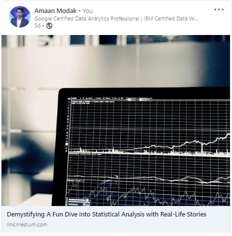Data Analysis: Navigating the Six Phases and Problem Types
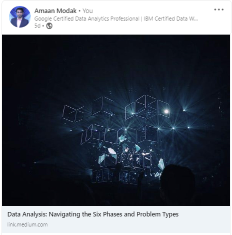The Art of Asking Questions for Data-Driven Decisions
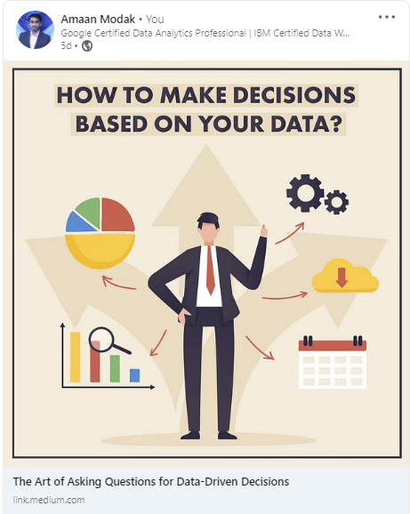Unveiling the Art of Data Analysis: From Questions to Answers
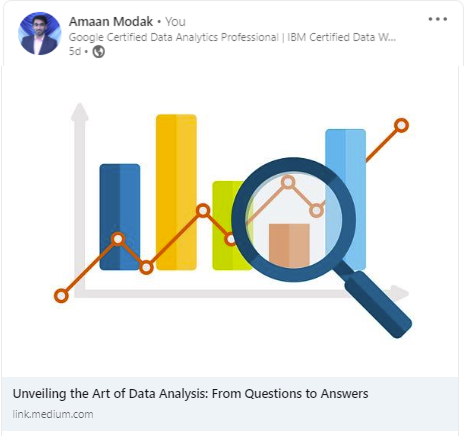Kaggle Notebooks
Fifa World Cup 2022 - Who deserved to win?
Tableau Visualizations
ACME Superstore Case Study
Work Experience
Professional Experience
-
Successfully delivered multiple partner projects, in the retail domain, from the onboarding stage through deployment in to production. Increased process efficiency by 50% and reduced implementation cost by 33% by automating the process of transmission and error detection.
• Achieved execution of on-boarding process and end-to-end integration for all new customers, and monitored daily inbound and outbound electronic transactions, identification of exceptions, root causes and resolution on time for smooth execution.
• Optimized SQL queries and performed database defragmentation, improving performance and loading speed by 70%.
• Developed interactive dashboards and reports using Microsoft Power BI, Tableau, and Google Integration Suite (Sheets, Docs, Slides) to provide actionable insights for stakeholders and improve decision-making processes.
• Automated data integration processes using Informatica, reducing manual data entry, saving over 20 hours per week.
• Maintained processes, scripts, encryption keys, and other key information uses in file transmission processes. Collaborated with the development team to modify and create new scripts and processes as needed.
• Close coordination with the business analysis team to support the development of business processes, modification and transmission to the concerned stakeholders.
• Gained expertise in the use of tools like Tableau and Microsoft Power BI to create customized dashboards and reports to analyse key performance metrics in the company business data.
• Collaborated with cross-functional teams to identify areas of improvement and instigated changes to improve performance and scalability of existing BI solutions.
• Developed training manuals for the induction of new hire employees and training on all system processes.
-
Integrated complex systems and provided cross-platform and cross-system support for over 15 partners, with timely deliverables, resulting in significant cost savings and improved operational performance.
• Spearheaded the full life cycle of software development, upgradation of the application’s existing software environment to newer versions.
• Utilized programming skills in R, Python, and SQL to perform data analysis and modeling, resulting in a 15% increase in accuracy of forecasting models.
• Created tables, ETL jobs, scripts, and packages in solution explorer, and wrote SQL queries and functions.
• Applied Joins and sub-queries to simplify complex queries and optimize procedures and triggers for production use in SQL, SnowFlake and BigQuery depending on the scope of the project.
• Conducted data quality checks and identified areas for improvement using Python and SQL scripts, resulting in a 10% increase in data accuracy.
• Developed and executed Unit, Integration, and Regression test plans, ensuring error-free migrations.
• Integrated various Internet connectivity protocols like SFTP, FTP(s), AS2, VAN, HTTP(s), SMTP.
• Identified and proposed EDI and ETL services for customer requirements, working with standards like ANSI X12, EDIFACT, and XML.
• Implemented proposed EDI solutions using tools like Contivo and Sterling Integrator, mapping XML/ANSI X12/CSV and setting up pipelines.
• Data Mapping and pipeline setup to map and transfer XML/ANSI X12/CSV/Flat Files and Database Inserts using IBM Sterling Integrator and Contivo.
• Accomplished successful delivery of complex project deliverables ahead of schedule and within the stipulated budget through system-oriented approach to project management.
-
• Identified and resolved issues in the software codebase, using debugging tools and techniques.
• Conducted software testing and quality assurance activities to ensure that the software met the required standards and specifications.
• Participated in code reviews and contributed to the overall development process of the software.
-

Project: eGuru Learning Software
• A complete quiz taking and feedback providing software aimed at the mechanical and civil engineering undergraduate students. It provided the instructors with an easy method of asking students to answer questions related to the course being taught, and also provide the students with the necessary feedback based on the answers that the students have chosen.
• Led a team to design, develop and test an examination tool software, to aid the department of Civil Engineering to conduct tests and automate the process of grading, using Java, Swing, Junit, Git and Eclipse for the process.
• Interacted with the clients and the project manager to gather the technical and design requirements, and liaised with the product team to identify new requirements and manage costs and schedule.
• Developed the software using Agile methodology and followed the best practices of SDLC.
• Solved the problem of manual grading mistakes, reduced the time taken to prepare and grade the tests by 50%, and achieved 99% accurate evaluation results.
• It aims to eliminate the traditional pen-and-paper method of in-class quizzes, whereby easing the burden on both the students and the instructors in the class.
It will be put in place for all courses from Spring 2018 in the Civil Engineering department for official class quizzes and assignments.

-
• Worked in a team of instructional writers in the mathematics and testing department to design the syllabus and questions for school students of Grade 1-10 in the US
• Coded and performed testing and debugging on the front-end website for the clients.
• Created educational lessons and tests based on the requirements conveyed to us by the clients.
Leadership Experience
-
• Started work as a student employee at certain stations in the food court.
• Based on the quality of my work, I was promoted to student manager and made responsible for the proper daily functioning of the various stations in the entire food court along with other managers.

-
• Started The Menace Football Academy to teach kids aged 6 to 15 how to play soccer.
• Coached approximately 30 children at a time during various seesions based on the different age groups and created customized training drills and routines for each age group, along with a team of 4 coaches.
• Managed a team of children who reached the semi final of an under-14 outdoor soccer tournament held at the Cooperage ground in Mumbai.
• Responsible for the smooth functioning of the football academy and led various workshops and events for all the participating children.
Volunteer Experience
-
• Organized blood donation drives in various location over Mumbai, India.
• Set up educational camps and workshops for underprivileged children in the city.
• Coordinated sports days and other activities for children from impoverished areas.
-
• Managed the technical events held during the inter-college festival.
• Organized technical workshops such as Unity game development workshop, Robotics workshop and Cyber security workshop for the students from the Computer Science and Electronics engineering fields.
• Student council member and acted as a representative for the students and interacted with the professors and the dean to ensure the best solution to any student-related problem.
• Coordinated various placement drives along with the Technical Placement Officer and interacted with various company representatives before the campus job fair.
Skills, Education and Certifications
Technical Proficiencies
-
- Expert
-
- Advanced
-
- Proficient
-
- Intermediate
-
- Basic
Legend
-
Databases and Cloud

Oracle
MS SQL Server
Snowflake
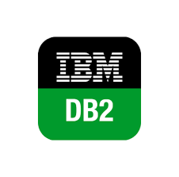IBM Db2
mySQL
Google BigQuery
-
Languages

Python

SQL

Java
R
XML

HTML & CSS
-
Data Tools

Tableau

Power BI
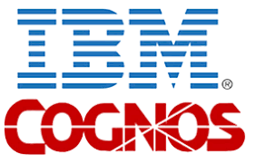IBM Cognos
Informatica
SSIS
QlikView

Looker
Kaggle
Jupyter Notebooks
-
Softwares
Microsoft Excel

Google Sheets
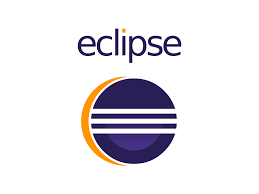Eclipse
VSCode & SublimeText
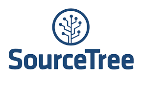SourceTree
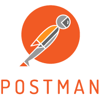Postman API
-
Servers and Cloud

Azure Cloud

AWS
Apache
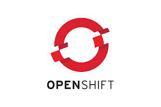OpenShift

FileZilla

IBM Cloud
-
Additional Skills

JIRA

Git
Azure DevOps

Unix Scripting
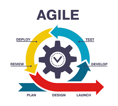Agile Methodologies
Educational Background

Certifications
Click the certificate title to verify the credentials.
Projects and Research Interests
Projects Completed
-
• A complete data analysis project using match statistics ranging from standard data such as games played to uncommonly portrayed data such as touches made for all teams participating in the FIFA World Cup 2022 held in Qata, to determine who should have been the champion.
• Developed the project using Tableau, Python and Kaggle's notebook.
• In this analysis, we tried to dig deeper into some of the statistics and data involved in the prestigiuos showcase, and try to gauge whether the most deserving team won the tournament or were there other candidates who had a stronger claim to the title.
• Technologies Used: Tableau, Excel, Python, HTML, Kaggle, Git
For more information either view the project on the Kaggle link shared below, or go ahead and view it on the Highlighted Portfolio page.
-
Project Guide: Dr. Matthew Hertz, UB.
• A complete quiz taking and feedback providing software aimed at the mechanical and civil engineering undergraduate students. It provided the instructors with an easy method of asking students to answer questions related to the course being taught, and also provide the students with the necessary feedback based on the answers that the students have chosen.
• Developed the software using Agile methodology and followed the best practices of SDLC.
• Led a team to design, develop and test an examination tool software, to aid the department of Civil Engineering to conduct tests and automate the process of grading, using Java, Swing, Junit, Git and Eclipse for the process.
• Interacted with the clients and the project manager to gather the technical and design requirements, and liaised with the product team to identify new requirements and manage costs and schedule.
• Solved the problem of manual grading mistakes, reduced the time taken to prepare and grade the tests by 50%, and achieved 99% accurate evaluation results.
• It aims to eliminate the traditional pen-and-paper method of in-class quizzes, whereby easing the burden on both the students and the instructors in the class.
It will be put in place for all courses from Spring 2018 in the Civil Engineering department for official class quizzes and assignments.
• Technologies Used: Java, Swing, Junit, JBuilder, Canvas, Git and Eclipse.
-
• An HTML website containing my resume and online portfolio.
• An efficient way to display my resume, make my profile more appealing to recruiters, and stand out from the crowd.
• Technologies Used: HTML5, CSS, JavaScript, Bootstrap
-
• An Android app designed for effortless counting through taps, making tracking and tallying a breeze with a simple and intuitive interface.
• Technologies Used: Android Studio, Java, Android SDK, Gradle, Kotlin, Visual Studio
-
Project Guide: Dr. Wenyao Xu, UB.
• The tasks here were to determine the proper Verilog module which would operate (either by voxels marking or line intersection, see the design section) on an incoming voxel coordinate pairs, the Verilog module which would distinguish whether an incoming voxel pair is malicious, and determine the Verilog implementation which would successfully detect whether there is a collision occurring between the two voxel pairs.
• Technology Used: Verilog
-
Project Guide: Dr. Varun Chandola, UB.
- Handwritten Digits Classification using Machine Learning: In this assignment, our task was to implement a Multilayer Perceptron Neural Network and evaluate its performance in classifying handwritten digits. We also used the same network to analyze a more challenging face dataset and compare the performance of the neural network against a deep neural network using the TensorFlow library.
Click here to view the project on GitHub. - Logistic Regression and SVM: In this assignment, our task was to implement Logistic Regression and use the Support Vector Machine tool to classify handwritten digit images and compare the performance of these methods, in machine learning.
Click here to view the project on GitHub. - Implementation of classification and regression in machine learning: Here, we implemented various concepts in machine learning such as Gaussian Discriminators (LDA and QDA), Linear Regression, Ridge Regression and Non-linear Regression.
Click here to view the project on GitHub.
• Technologies Used: Python, numPy, sciPy, TensorFlow
- Handwritten Digits Classification using Machine Learning: In this assignment, our task was to implement a Multilayer Perceptron Neural Network and evaluate its performance in classifying handwritten digits. We also used the same network to analyze a more challenging face dataset and compare the performance of the neural network against a deep neural network using the TensorFlow library.
-
Project Guide: Dr. Chang Wen Chen, UB.
• In this project Hough Transform was implemented from scratch to detect circles of any given size in any image provided as input.
• The algorithm was executed using various concepts in computer vision and image processing such as Edge Detection, Gaussian Filtering and Accumulator Arrays.
• Technologies Used: Python
-
• Designed a music player in MATLAB and Java, which would automatically suggest songs based on the user’s emotions detected using facial expression recognition, captured using the user’s camera.
• Achieved an overall accuracy of 83% in capturing and identifying the correct facial expression of the user.
• Project involved using SVM to classify the emotions and using the JAFFE database as the training data.
Technologies Used: MATLAB, Java
-
• Designed a movie review website, from scratch, where the user can access information about any movie in the database, and provide a personal review.
• Used HTML5, CSS, Bootstrap and Javascript for the front-end, and PHP and MySQL for the back-end development.
• Technologies Used: HTML5, CSS, Bootstrap, Javascript, PHP, mySQL, Apache.
-
Project Guide: Dr. Jing Gao, UB.
• Configured a single-node Hadoop cluster and implemented MapReduce K-means, along with the other clustering algorithms in Python.
• Compared time complexity and achieved results with non-parallel K-means for given training datasets.
• Also implemented three clustering algorithms to find clusters of genes that exhibit similar expression profiles, which are K-means algorithm, Hierarchical Agglomerative clustering with Single Link (Min), and Density-based DBSCAN (Density-based spatial clustering of applications with noise)
• Technologies Used: Python, numPy, sciPy, skLearn, Hadoop, Hbase.
-
Project Guide: Dr. Jing Gao, UB.
• Implemented three classification algorithms by yourself: Nearest Neighbor, Decision Tree, and Naïve Bayes.
• Implemented Random Forests based on our own implementation of Decision Tree.
• Implemented Boosting based on our own implementation of Decision Tree.
• Adopted 10-fold Cross Validation to evaluate the performance of all methods on the provided datasets in terms of Accuracy, Precision, Recall, and F-1 measure.
• Technologies Used: Python, numPy, sciPy, skLearn, Hadoop, Hbase.
Research Interests
- Data Analytics
- Machine Learning
- Data Engineering
- Computer Vision & Image Processing
- Online Information Retrieval
- Big Data
- Software Engineering Agile Development
- Web Development & Design
- Technological Innovation & Management Techniques
- Project Management
To get in touch with me
Hey there – Thanks for visiting! I’m stoked that you’d like to get in touch with me.
Feel free to contact me via any of the mediums mentioned below. If you are unable to get in touch with me by call for any reason, drop me a mail and I will get back in touch with you at the earliest.
- Email ID: amaan.mod08@gmail.com
- Call/Text/Whatsapp Number: +1 7162759087
- Skype: amaan.modak
- LinkedIn: in.linkedin.com/in/amaan-m
- Facebook: AmaanAModak
- Instagram: amaan_modak
- Medium: @amaan.modak93
- Blogger: amaanamodak.blogspot.com
Please take a look at my resume by clicking the button below, and don't hesitate to reach out to me you feel I can be a good fit for any requirements.